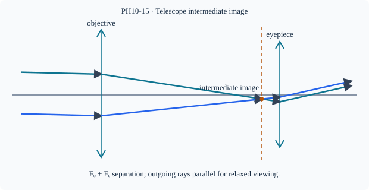

Prerequisite bridge
PH10-06
Before starting, identify the reference frame, directed rays, units and applicable geometric assumptions. Unbound prerequisites remain provisional.
Connected textbook foundation (preserved from PR #5)
15. Optical instruments as connected systems
Simple magnifiers, microscopes and telescopes use the image-making ability of lenses or mirrors. The objective and eyepiece can play different roles. For a school-level qualitative account, describe how an objective first collects light and forms an image or angular transformation, while an eyepiece makes that intermediate optical information easier to inspect.
A multi-element instrument is not one thin lens with an artificially chosen combined focal length. Full quantitative multi-lens inverse calculations are separately marked as advanced extensions until justified. Qualitative diagrams should identify which image is intermediate and which rays enter the observer's eye.
Build and check the model
In a simple astronomical refracting telescope, objective gathers distant light and forms a real intermediate image near its focus; eyepiece magnifies angular view of that image, often adjusted for relaxed eye with final rays parallel. Normal adjustment for two thin converging lenses gives separation F_o+F_e and angular magnification magnitude F_o/F_e (inverted image). A compound microscope objective images a close object just outside its focus into a real enlarged intermediate image, then eyepiece acts as magnifier. These quantitative formula examples are supplementary, not verified syllabus requirements.
Worked anchor
Telescope F_o=40 cm,F_e=5 cm: normal adjustment separation 45 cm and angular magnification magnitude 8. Microscope objective F=2 cm,d=2.5 cm gives q=10 cm, m=−4 before eyepiece.
Condition and limiting check
Angular magnification is not linear image-height magnification; actual instruments may have multiple lens elements or erecting optics.
Misconception repair
Objective and eyepiece have different roles; two lenses in an instrument do not automatically behave as contact lenses.
Reasoning diagram

Self-check before transfer
Telescope F_o=75 cm, F_e=5 cm. Normal separation and angular magnification?
Check the reasoning
80 cm separation; |M|=15. Angular, not linear magnification.
Source and figure status
Curriculum pointer CBSE9 (competency C2.3); candidate scope only. Preserved chapter manuscript. Original subtopic-specific figure attached. Scientific figure and teaching-sufficiency reviews remain HOLD.